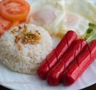
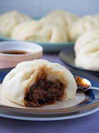

FOOD PLAN
SEPTEMBER 19 / DAY 4
- BREAKFAST: Hotdog and egg with garlic rice

- CALORIES CONTENT
-
620 calories
- NUTRITIONAL ADVANTAGES AND BENEFITS
-
The protein in hot dogs is a complete protein, meaning it offers all the
essential amino acids our bodies need.
-
Garlic and rice both contain antioxidants, which help protect cells from
free radical damage. Antioxidants help to reduce the risk of chronic illnesses.
-
Fried egg protein has been shown to reduce malnutrition, boost muscle health,
and hence help in losing weight.
- LUNCH: Ginataang gulay with 2 rice
- CALORIES CONTENT
- 520 calories
- NUTRITIONAL ADVANTAGES / BENEFIT
-
It also aids in the management of diabetes and has been linked to better eye and
bone health. Kalabasa contains niacin, vitamin A, folate, vitamin C, vitamin E,
vitamin B6, and thiamine. Sitaw is a low-calorie vegetable. It contains high levels
of vitamins A and C, as well as folate.
- Siopao

- CALORIES CONTENT
- 320 calories
- NUTRITIONAL ADVANTAGES / BENEFIT
-
Chicken Siopao Filling contains muscle-building protein, which helps dieters maintain lean mass.